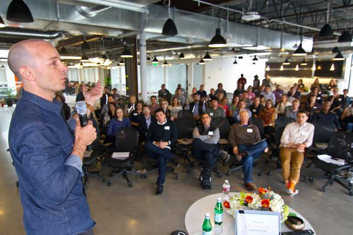

Nick MatteiView profile
@nlcm89
Full Stack Developer
Full Stack Developer
Birthday
- Public
- My followers
- People I follow
- We follow each other
- Only me
- Learn more about these settings
- Public
- My followers
- People I follow
- We follow each other
- Only me
- Learn more about these settings
Tweets
- Tweets
- Tweets & replies
- Photos & videos
@nlcm89 is blocked
Are you sure you want to view these Tweets? Viewing Tweets won't unblock @nlcm89.
You followed
-
-
-
Insomnia can be acute (short-term) or chronic (ongoing). Acute insomnia is common and often is brought on by situations such as stress at w
0 retweets 0 favorites -
-
-
Nick Mattei retweeted
A story of struggle in nature's harshest elements to attempt the Shark's Fin on Mount Meru: http://bit.ly/1TOze8P pic.twitter.com/QxaeHYl70B
1:23 PM - 21 Jul 2015 · Details -
Nick Mattei retweeted
Watson News Explorer uses
@AlchemyAPI to automatically construct a news information network. http://ibm.co/1OsBO1a pic.twitter.com/eQOvL3CgLO11:25 AM - 21 Jul 2015 · Details -
Nick Mattei retweeted
CEO of
@backcountrycom, Jill Layfield, shares her views on#leadership and#success. http://buff.ly/1OdAbnt pic.twitter.com/qoMVIZtF3X2:02 PM - 19 Jul 2015 · Details -
Nick Mattei retweeted
Behold: The first life-saving wearable: http://bit.ly/1OdvCKm pic.twitter.com/uy6WdeOOgJ
6:01 PM - 19 Jul 2015 · Details -
Nick Mattei retweeted
The science behind Personality Insights on the Watson Developer Cloud: http://ibm.co/1HE8MYo
#IBMWatson pic.twitter.com/WkqrYhBTdY9:59 AM - 19 Jul 2015 · Details -
Nick Mattei retweeted
Just in:
#IBM expands cognitive speech & language services w/ GA releases on Watson platform. http://ibm.co/1CgVBPr pic.twitter.com/xdLCqNC4cB2:02 PM - 6 Jul 2015 · Details -
Nick Mattei retweeted
See how
#bluemix works w/@SilverHookPower to quickly deliver crucial racing data. Take Bluemix for a spin today! http://bit.ly/1JEtJpA -
-
Nick Mattei retweeted
Here are some of the best hacks using
#Bluemix and Watson: http://ibm.co/1KHckOv pic.twitter.com/MBrroPbUXc3:59 PM - 21 Jun 2015 · Details -
Nick Mattei retweeted
Looking forward to learning with you at the webcast in few days. https://ibm.biz/BlmxNodejs-social …
#bluemix @cloudant pic.twitter.com/gLfTvOkAQL9:30 AM - 13 Jun 2015 · Details -
You followed Red Bull, Seth Morrison, Eleven Experience and 10 others
-
Nick Mattei retweeted
Why We Partnered with
@google to Expand to London http://www.galvanize.com/blog/2015/06/02/galvanize-expands-to-london-our-first-step-toward-building-a-global-community/#.VW3YJG2xMXg.twitter … by@yodeets#levelup#datascience pic.twitter.com/24glQJrqIg9:24 AM - 2 Jun 2015 · Details -
Significant Digits For Monday, June 1, 2015 http://53eig.ht/1dFy8Ng
-
Nick Mattei retweeted
Choosing what investment is best for you just got easier with
#IBMWatson Tradeoff Analytics. http://ibm.co/1FG2qZ1 pic.twitter.com/IZOv9WT5nT4:00 PM - 29 May 2015 · Details -
Nick Mattei retweeted
Be one of the first, to learn about
@IBMWatson's Tradeoff Analytics General Availability (GA) release http://ibm.co/1GHGjDL#bluemix
 The Business Woman
The Business Woman
You haven't tweeted yet.
Loading seems to be taking a while.
Twitter may be over capacity or experiencing a momentary hiccup. Try again or visit Twitter Status for more information.
Flag this media
This has already been marked as containing sensitive content.
Who to follow
· · View all-
#CecilTheLion
Cecil the lion's killer revealed as American dentist185K Tweets about this trend
-
#CaliforniaMusicVideo
88.2K Tweets about this trend
-
Tom Brady
Roger Goodell upholds Tom Brady suspension184K Tweets about this trend
-
#PrettyLittleLiars
‘Pretty Little Liars’ Spoilers 2015: ‘FrAmed’ Episode – 7/28/1526K Tweets about this trend
-
#PLLChat
52.9K Tweets about this trend
-
#TenThingsNotToSayToAWriter
Popular Authors Are Using Twitter to Share #TenThingsNotToSayToAWriter108K Tweets about this trend
-
Periscope
Twitter To Broadcast Earnings Call on Periscope167K Tweets about this trend
-
Tulo
Carlos Gonzalez on trade block following Troy Tulowitzki deal86.7K Tweets about this trend
-
Product Hunt
Amazon Takes On Product Hunt, Shopify With Launchpad, An All-In-One…1,727 Tweets about this trend
-
Noah Syndergaard
Noah Syndergaard throwing perfect game through 6 innings vs. PadresJust started trending